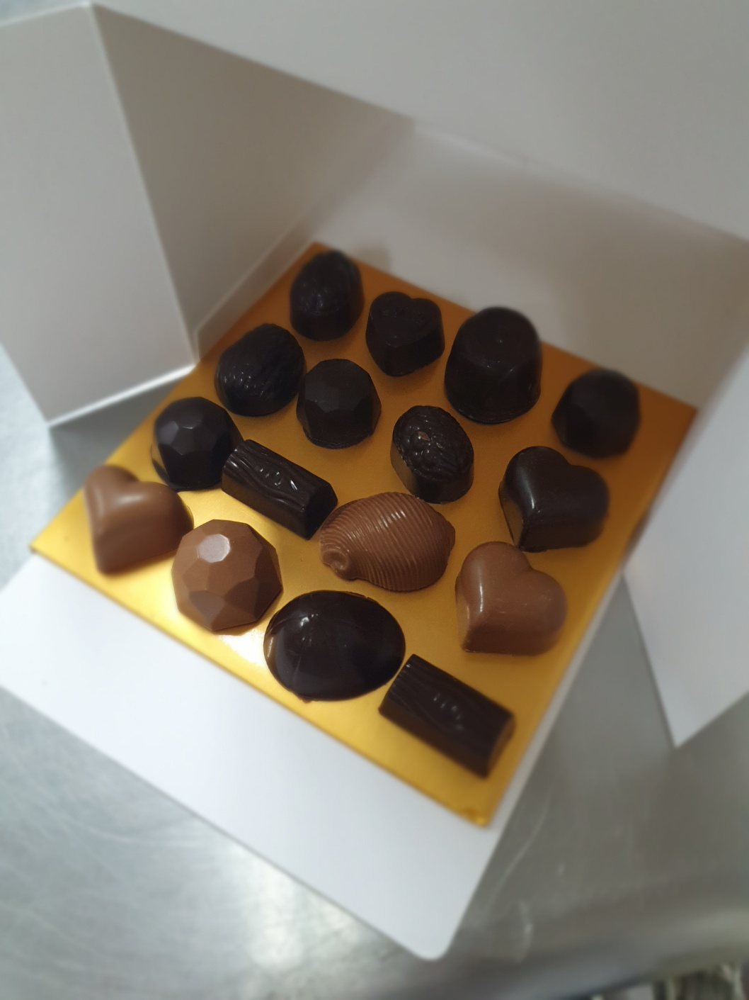

쌉쌀한 다크초콜릿 코팅에 부드러운 가나슈의 조합
| 재료 | 계량 | |
|---|---|---|
| — 껍데기 | ||
| 다크 초콜릿 | 300 g | |
| — 가나슈(트뤼프) | ||
| 다크 초콜릿 | 300 g | |
| 생크림 | 100 g | |
| 버터 | 20 g | |
| 럼 | 20 g | |
따뜻한 물을 준비해서 초콜릿을 45~50도사이로 녹여주고 27~28도로 식혀준다. 그 후, 31~32도로 올려준다
틀에 템퍼링한 초콜릿을 부어준 뒤, 뒤집어서 껍질만 만드는 형태로 초콜릿을 빼주고 윗면을 정리해주고 냉장고에 넣어준다.
녹인 초콜릿과 데운 생크림으로 가나슈를 만들어준 뒤, 럼을 넣어준다.
가나슈를 초콜릿 틀에 80%로 채워준 뒤, 다시 위에 템퍼링한 초콜릿을 채워주고 냉장고에 넣는다.
잘 만든 초콜릿은 틀에서 분리가 잘 된다.